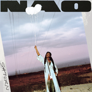
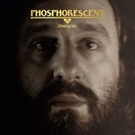

Quick Takes (October 2018)
Welcome to our latest edition of Quick Takes!
I must admit that October was a difficult month to approach. Given that I knew I was going to tackle it on my own, I wanted to be careful with my selections. I could either write about some banner albums we failed to deliver longer reviews on time - Kurt Vile and John Grant come to mind - or avoid following any plans and simply write about whatever I felt like at the time. The final result falls somewhere in between - I wanted to write about Adrienne Lenker's sublime solo effort since I first heard it, whereas I felt a bit of an obligation to write about the new Cloud Nothings. It was a record I liked, of course, but I left out others I would've liked to cover because I knew some of you were expecting me to write about it.
What were your favorite albums during the month of October? Anything we didn't get to review that we should've? You can always reach us on Facebook, or on our official twitter page. Juan
...
Adrianne Lenker
abyskiss
(Saddle Creek)
Adrianne Lenker searches the inner recesses of the human soul on abysskiss. Akin to her band project Big Thief, the singer-songwriter's latest solo effort touches on the same heartrending stories that have characterized her main project but with a hushed, more intimate frame of mind. Think of an acoustic version of her band project, if you will, but these acoustics tracks sound far from leftover material. Sly, finger-picked compositions like "womb" and the title track are sublime in their somber clarity, capturing the intricate elegance of seventies British folk while injecting her purring drawl. Sans for one false note in out of your mind, which utilizes an electric guitar as she howls out of tune, she carries the weight of abysskiss by balancing a rich confluence of sophisticated arpeggios and anecdotal occurrences in song form. But what's most impressive is how Lenker stands apart from both modern singer-songwriter tropes and the cult psych-folk canon, creating a haunting mood that touches upon both sides with her own unique touch. [8/10]
 Cloud Nothings
Cloud Nothings
Last Building Burning
(Carpark)
It doesn't take long for Cloud Nothings to set the tone of Last Building Burning: fast, furious and unapologetic. The Cleveland, Ohio trio slightly muted the energy on last year's Life Without Sound, where the band replaced fast, ricocheting tempos and curdled post-hardcore rhythms with a hook-oriented indie rock sound. Frontman Dylan Baldi also abandoned his shrieking howl with euphonious (but no less impassioned) vocals that served as a reminder that his focus is on songwriting regardless of the disposition. Album opener On An Edge sounds as alarming as its title implies with its charging guitars and teetering pace, a nod to upfront hardcore, but Baldi quickly steadies the mood with the lilting melodicism of Leave Him Now and Offer An End. Baldi is too good of a tunesmith to tuck his pop sensibilities outright, so at times it seems as if he's trying to find a compromise for those who'd rather hear him build and release his tension. But he doesn't believe that both are meant to be mutually, after all, resulting in a raw, yet purposeful execution that never spoils his clear-headed grasp. [8/10]
NAO
Saturn
(Little Tokyo Recordings/RCA Records)
Neo Jessica Joshua stormed into the pop landscape with her debut effort For All We Know. The British singer-songwriter, who goes by Neo, delivered such a fully-formed reimagining of nineties R&B that it was hard to imagine how she could write a follow-up that equally matches its predecessor. It's unfair to describe Saturn as an outright disappointment because it's far from it - If You Ever and Love Supreme are notable examples of how she's developing her earthy, soulful sound with urgent funk bursts. Her lush, clairvoyant voice hardly misses a beat as she goes through the trials and tribulations of growing into a young adult. But Nao is also adapting to change, absorbing and exploring other sounds with a touch of indecision. The mixtape-like sequencing of Saturn occasionally minimizes her ability to write hit after hit - there's hardly a dud here - even if she just misses the mark at producing a more involving mood piece. [7/10]
Phosphorescent
C'est La Vie
(Dead Oceans)
Life has significantly mellowed out for Matthew Houck on C'est La Vie. The Alabama singer-songwriter has laced his drifting country rock with a palpable sense of heartache, gradually finding new ways to color outside the usual troubadour tropes. So when he brought in a new array of sonics into his simple, yet affecting arrangements, it signified a new phase in his already wide-ranging output. Since then, Houck found the love of his life, started a family and moved from Brooklyn to Nashville. This graceful optimism suits him well, though in exploring this new phase, he struggles to properly articulate how his past behavior ultimately shaped his present. It's the most spirited Houck has sounded in years, as he jumps from soaring rockers (Around the Horn) to choral pop (New Birth in England) with blithe cheerfulness. He reflects on some of his past behavior on C'est La Vie No. 2, but it turns out to be an afterthought, a phase he'd rather leave behind. It's laudable for Houck to celebrate the goodness that lives within him, but something about the disjointed C'est La Vie tells me that focusing on how he got to that place would've been a more compelling narrative. [6/10]
 Saves the Day
Saves the Day
9
(Equal Vision Records)
A minute into 9, Saves the Day's return after five years, frontman Chris Conley reassures his fans that they will love their new record. And though such a self-serving gesture may seem arrogant, it doesn't take long for Conley to let his guard down. It serves to mention that the longstanding emo band have taken more of a power-pop stance for the latter part of their career, and much like their older peers, they're simply emulating the genre’s self-referential traditions: the joys of being on the road, the nostalgic remembrances, and the allegiance they hold to those who adore them. Conley's diaristic accounts are clumsily direct at times, but in doing so, we also gain insight into his spiritual awakening. He celebrates his most memorable experiences with pathos and melancholy, especially during the album's massive finale 29, a thoughtful 21-minute medley where he sounds apologetic, yet thankful for his stumbles, a surprising reversal of roles given how he struts his way into tired rock cliches in the previous eight tracks. Conley is the sensitive, aging punk in 9, the one you probably outgrew years ago but still hold close to your heart, and he's happy to stick around for as long as you're willing to listen. [7/10]
 Swearin'
Swearin'
Fall into the Sun
(Merge)
Change is what drives Swearin' forward in Fall into the Sun. After a sudden breakup, the Philadelphia trio picks up right where they left off with a hefty dose of hooky, raw-edged pop punk. That's not to say that the reunion was an easy one - from Big Change to Untitled (LA), both of which reference singer/songwriter Allison Crutchfield's move to Los Angeles, the trio rediscover their spark after dealing with some inner band turmoil and the logistical difficulties that come with relocation. But time and distance have benefitted their stylistic production choices - whereas their earlier records had a rougher, saw-toothed quality to them, Fall into the Sun embraces a sparkling, melodic mid-tempo sound that is strung together with careful consideration. It's uniformly straightforward, sometimes to a fault, but the trio's learned experiences elevate these songs from fading into the background. [7/10]
13 November, 2018 - 04:46 — Juan Edgardo Rodriguez